Redesign batch 5
Drafts only. The Kimurodex still shows the old art. Approve, ask for changes, or keep the old one, then press Export my decisions and paste the text to Claude. (Hidden from search engines, but anyone with the address can open it.)
Scutwee / Scuthorn / Scutossus
חזיר יער לבה (אדמה ואש)


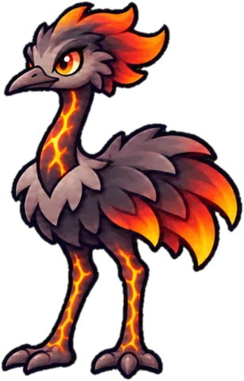
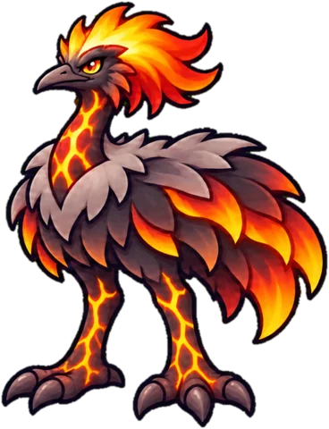
Chillpeep / Frostpenguin / Glacemperor
אורקה קרח (קרח ומים)
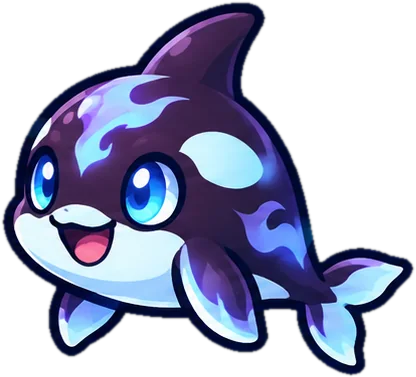


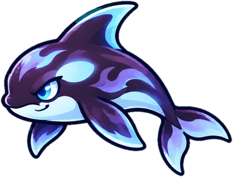
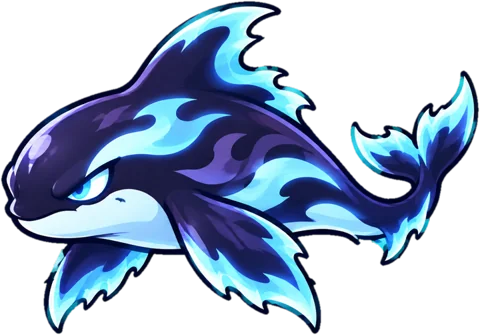
Scalkin / Scalisaur / Metallisk
ג'ירפת ברזל (אדמה ופלדה)


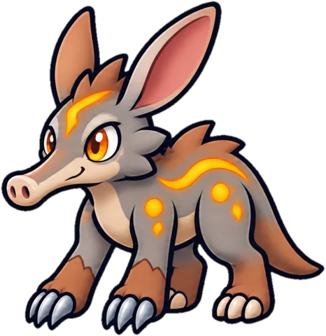
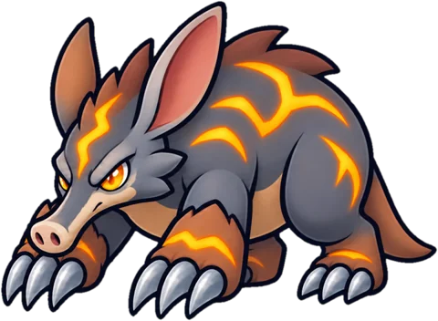
Embcub / Embered / Inferyx
תן-דרקון אש (אש ודרקון)


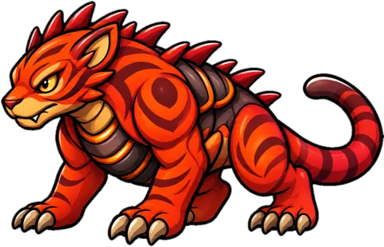
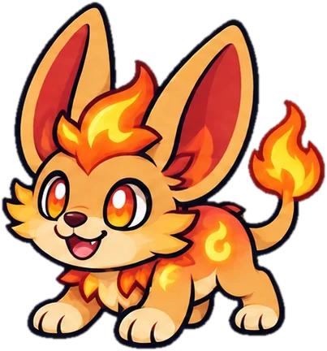
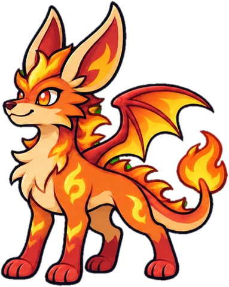
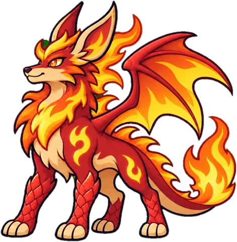
Sportle / Fungurtle / Mycolemoth
בונה אבן ומוך (עשב וסלע)


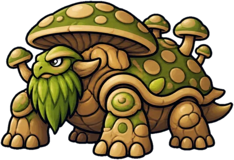
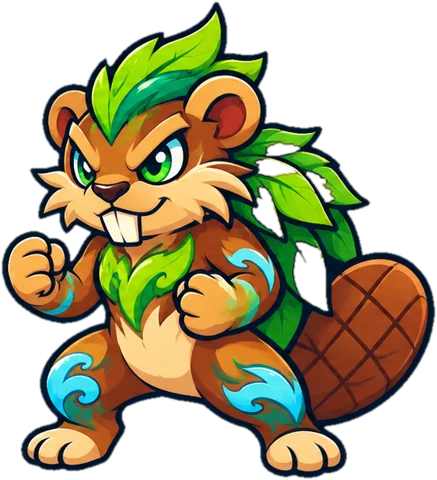
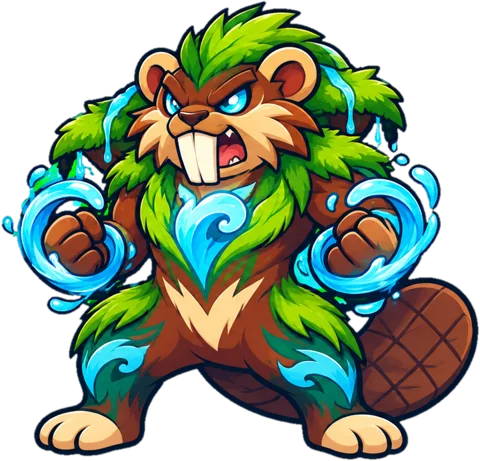
Petkit / Petrocorn / Stonarch
אוקאפי מאובן (סלע)
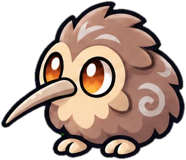


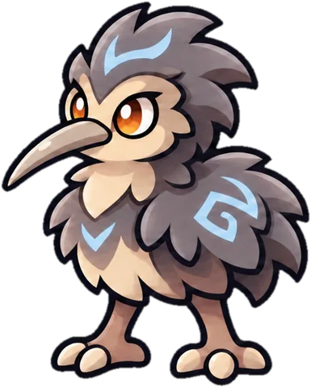
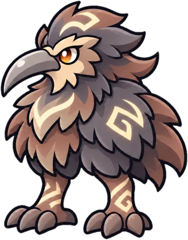
Serplet / Vipray / Hydravex
טוקן רעל (עשב ורעל)


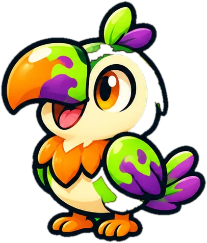
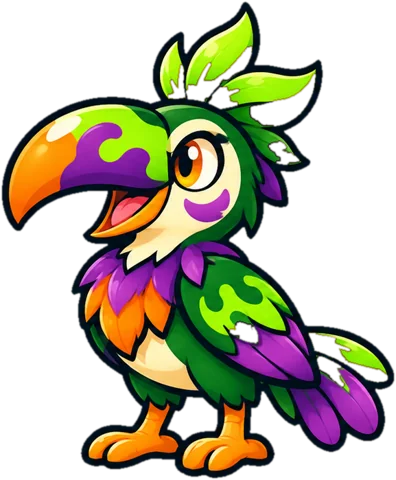
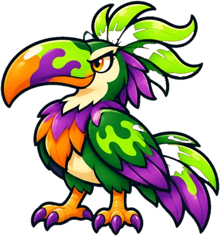
Burrit / Burrixe / Terravix
נמבט חרס (אדמה)
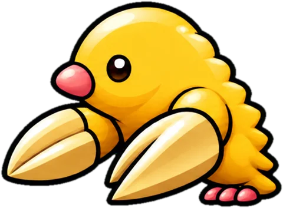


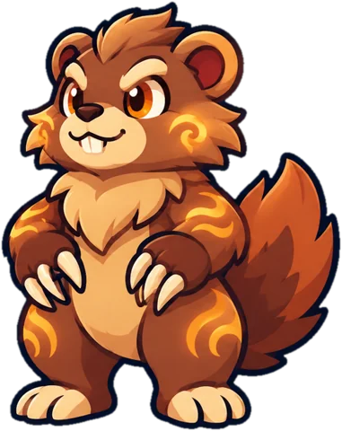
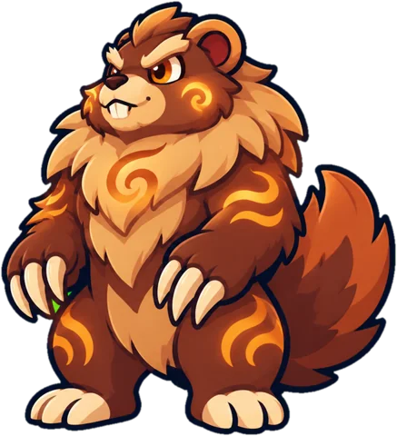
Carapiny / Caraphor / Caraphalanx
צרצר פלדה (חרק ופלדה)


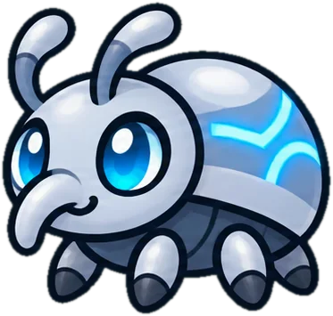
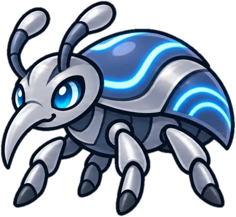
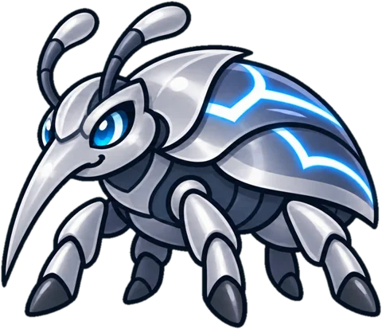
Hornlet / Cerathorn / Titanoceros
איל אבן (אדמה וסלע)

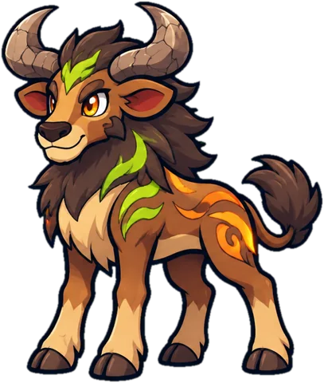
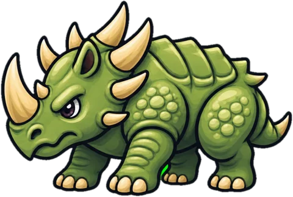

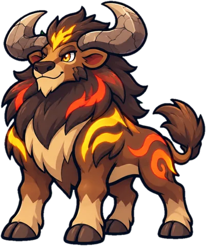
Quilkit / Quillyx / Ironquill
טפיר עשב ורעל (טייפ חדש)


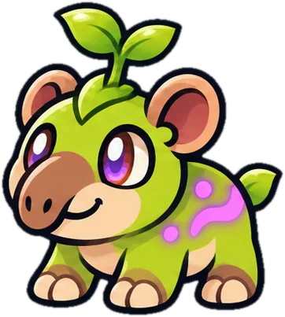
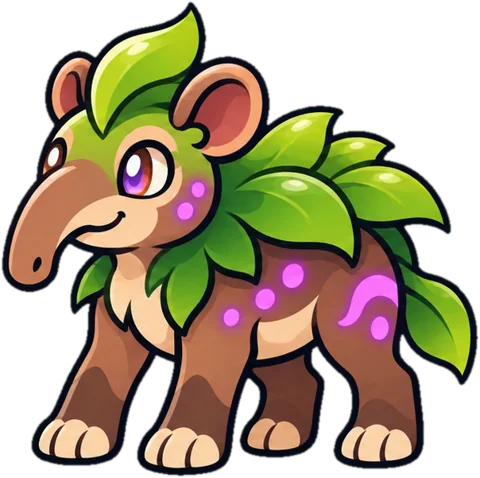
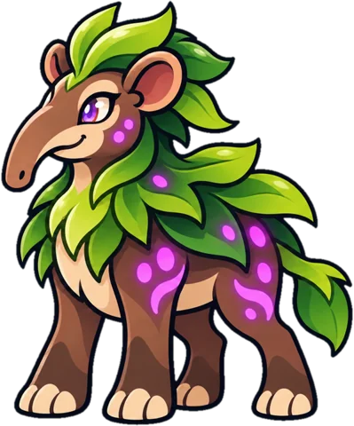
Sporkling / Mycodon / Sporgathor
בואש רעל ואופל (טייפ חדש)


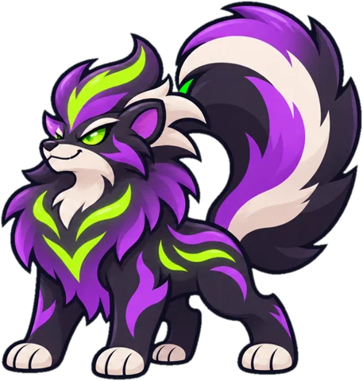
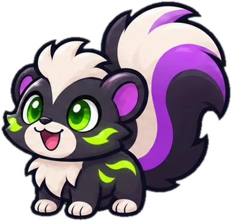
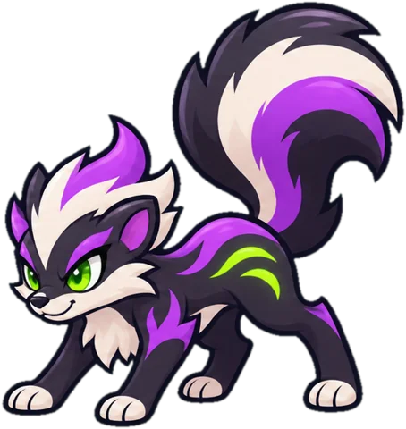

Frostusk / Mammox / Glacimoth
דוב נמלים אדמה ואש (טייפ חדש)


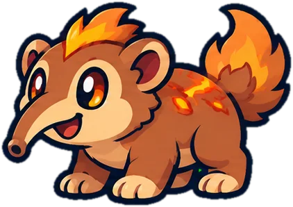
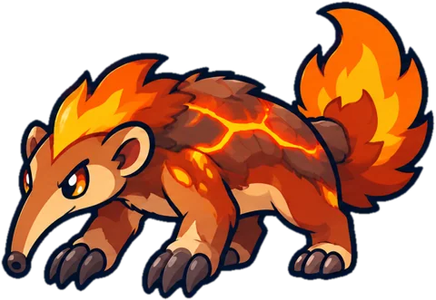

Warmolt / Magmaw / Pyrrhippo
קפיברה עשב ומים (טייפ חדש)


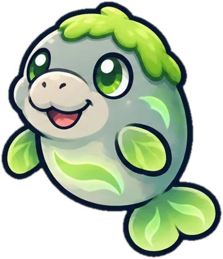
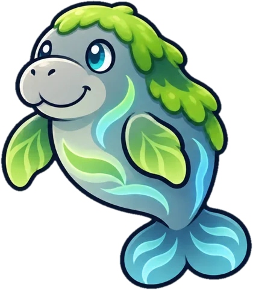
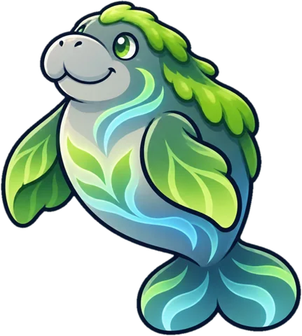